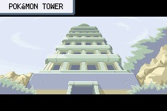
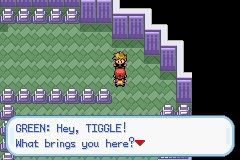
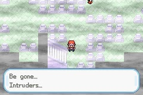
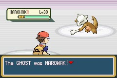
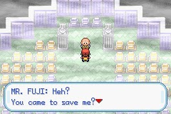
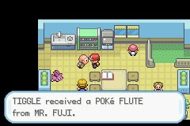

บทที่ 13 / 29
โปเกมอนทาวเวอร์<Pokemon Tower>
❖


จะพบคู่แข่งในชั้นที่2 ซึ่งจะแข็งแกร่งกว่าคราวที่แล้วพอสมควร เลเวล20-25 พอสู้เสร็จแล้วให้เดินต่อไป ตั้งแต่ชั้นที่3 หากเราไม่พก Silph Scope ที่หัวหน้าทีมร็อคเก็ตทิ้งไว้ เราจะไม่สามารถสู้กับผีที่อยู่ในนี้ได้เลย ในชั้นที่ 6 ตรงบันไดที่จะขึ้นไปชั้นที่7จะพบผี Marowak Lv.30 เราจะไม่สามารถผ่านขึ้นไปชั้นต่อไปได้ หากเราไม่ กำจัดมัน ให้ฆ่ามันทิ้งซะ(เราไม่สามารถจับมันได้)


พอขั้นไปชั้น7 เราจะต้องสู้คนในทีมร็อคเก็ต3คนเพื่อช่วยคนออกมา พอสู้ได้แล้วให้เราคุยกับผู้เฒ่าฟูจิที่อยู่ในสุด แล้วคุยกับเขาอีกทีในบ้าน เราจะได้ขลุ่ยโปเกมอน<Poke Flute> มา


เป้าหมายต่อไปของเราคือเมืองเซคิชิคุ ซึ่งสามารถไปได้2ทาง คือผ่านทางจักรยานถนนหมายเลข16-18 หรือลงมาทางถนนหมายเลข12-15